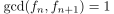
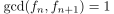
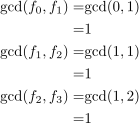
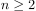
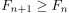
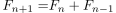

sequent Fibonacci Numbers are coprime
1. Therem
Let  , then the greatest common divisor of sequent Fibonacci numbers is 
, then the greatest common divisor of sequent Fibonacci numbers is 
2. Proof
2.1. Basis

1
2.2. Step
For  we can assume, that  . Using euclids algorithms we conclude:

2